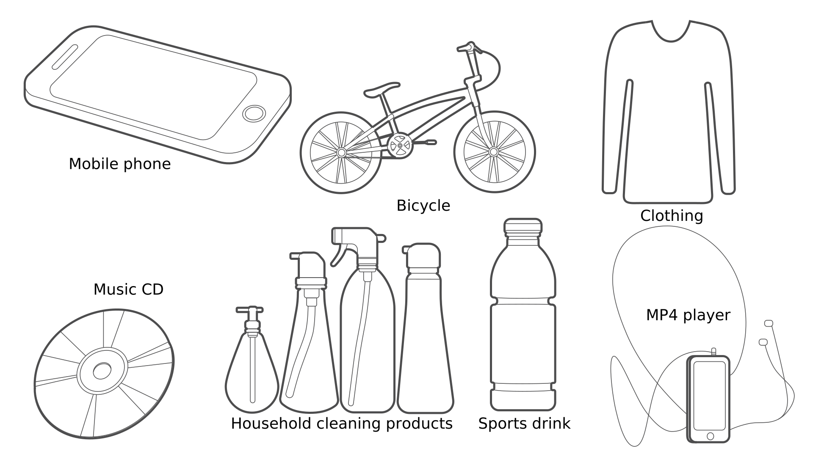
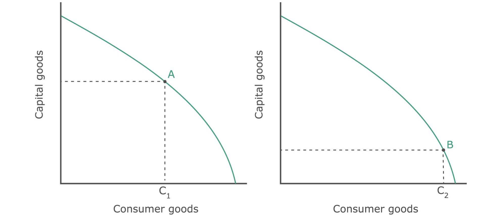
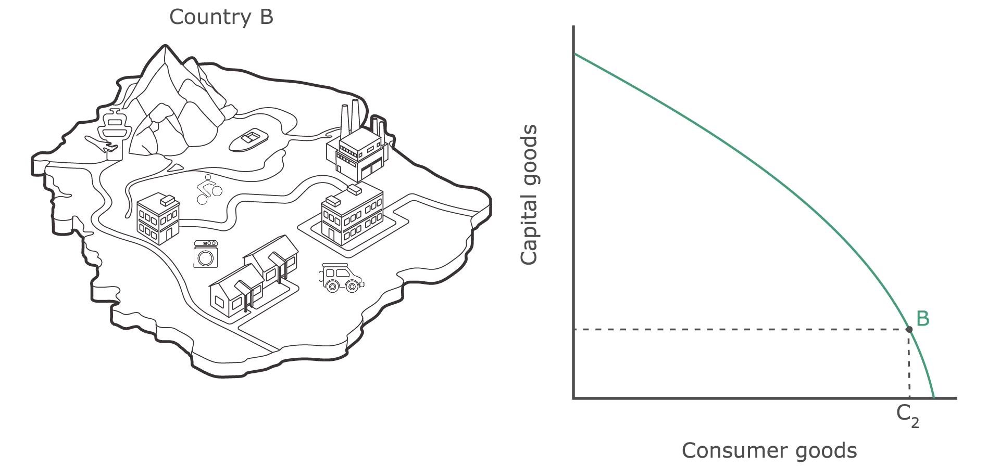
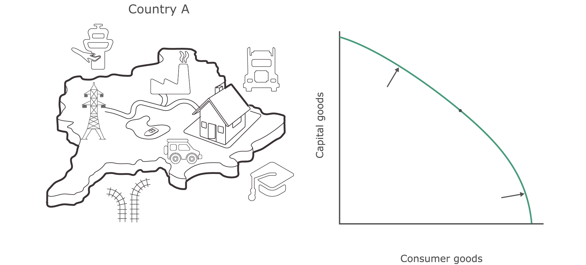

A key issue that can be illustrated by the production possibilities curve is how the decisions we make today have an impact on our future.
An important decision that any society needs to make is how many resources to devote to the production of capital goods and how many resources to devote to the production of consumer goods.
Look at the list of goods below. Which of these are capital goods and which of these are consumer goods? Select each of the goods that you think are capital goods and then press 'submit'.
Consumer goods are used or consumed by individuals or households (i.e. consumers) to satisfy needs and wants. Examples include food, wine, clothing, shoes, furniture, household appliances and motor cars.
The trade-off society faces is whether it should allocate more resources to satisfy needs and wants in the current period, or whether it should allocate more resources to the creation of capital goods that will make it possible to create more consumer goods and services in the future. In other words, should society sacrifice current consumption to increase future consumption?
This trade-off can be illustrated by the production possibilities curves for country A and country B depicted below.
The production of capital goods is represented on the vertical axis, while the production of consumer goods is represented on the horizontal axis.
Country A decides to allocate resources not only for the replacement of worn-out capital, but also to create new capital goods. This is indicated by point A. At this point the quantity of consumer goods is equal to C1.
Country B, however, decides to allocate resources only for the replacement of worn-out capital. This is indicated by point B. At this point, the quantity of consumer goods is equal to C2.
Allocation of resources between capital and consumer goods
In the current period, people in country B have more consumer goods (C2) than the people in country A (C1) and they can therefore satisfy more needs and wants. We can therefore say they have a higher standard of living.
Over time, however, this position will change.
The production possibilities curve for country B will stay the same because the country only produces sufficient capital goods to replace worn-out capital goods and there will be no change in the people's standard of living.
Production possibilities for country B stay the same
The production possibilities curve for country A will shift outwards in the future because the country increased its capital goods, which makes it possible for it to produce more consumer goods. And as long as this country continues to allocate resources in this way, the production possibilities curve will shift outwards and economic growth will occur and the standard of living will increase and eventually overtake that of country B.
Production possibilities for country A increases